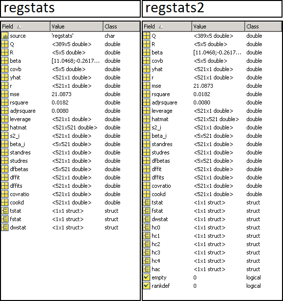

REGSTATS2: what's new
This is an enhanced version of the regstats function (statistics toolbox). Here are implemented several ways to estimate robust standard errors (se) for the coefficients\n. Also, it allows to supply a matrix of responses, where each columns is considered as a distinct series, instead of just a vector. The engine will loop through each column returning a set of results for each regression. Another additional feature is the option "onlydata" for the argument MODEL. You can supply DATA as it is without adding the constant or the interaction terms.
Contents
ROBUST SE METHODS
The methods implemented to estimate robust se are the following:
- HC0 - White robust t statistics (Eicker,1963,1967; Huber,1967; White,1980)
- HC1 - With dfe correction (Hinkley,1977)
- HC2 - White weighted by 1-h (MacKinnon & White,1985)
- HC3 - White weighted by (1-h)^2 (Davidson & MacKinnon,1993)
- HC4 - White weighted by (1-h)^delta (Cribari & Neto,2004)
- HAC - Newey West t statistics (Newey & West,1987)
REFERENCES
The main references I used to implement the estimation methods are from:
- Achim Z.(2004). Econometric Computing with HC and HAC Covariance Matrix Estimators. Journal of Statistical Software, XI, 10th issue. http://www.jstatsoft.org/v11/i10
- Econometrics Toolbox: by James P. LeSage. http://www.spatial-econometrics.com/
OTHER FIELDS
- empty - true if the series is all NaNs
- rankdef - true if the series is rank deficient
EXAMPLE
Lets test regstats2 against regstats on a single series of the responses
warning off stats:pvaluedw:BadMethod % set the warnings off warning off MATLAB:nearlySingularMatrix % set the warnings off load Demodata tic; Stats1 = regstats(Demodata.resp(:,1),Demodata.X,'linear','all'); fprintf('Elapsed time: %f s\n', toc); tic; Stats2 = regstats2(Demodata.resp(:,1),Demodata.X,'linear','all'); fprintf('Elapsed time: %f s\n', toc);
Elapsed time: 1.389385 s Elapsed time: 1.682561 s

Lets test regstats2 on several series of the responses (without dwstat which is the heaviest routine)
whichstats = {'Q','R','beta','covb','yhat','r','mse','rsquare','adjrsquare', ...
'leverage','hatmat','s2_i','beta_i','standres','studres', ...
'dfbetas','dffit','dffits','covratio','cookd','tstat','fstat',...
'hc0','hc1','hc2','hc3','hc4','hac','empty','rankdef'};
tic;Stats3 = regstats2(Demodata.resp(:,1:5),Demodata.X,'linear',whichstats);
fprintf('Elapsed time: %f s\n\n', toc);
whos Stats3; disp(fieldnames(Stats3))
Elapsed time: 0.289656 s
Name Size Bytes Class Attributes
Stats3 1x5 11409450 struct
'Q'
'R'
'beta'
'covb'
'yhat'
'r'
'mse'
'rsquare'
'adjrsquare'
'leverage'
'hatmat'
's2_i'
'beta_i'
'standres'
'studres'
'dfbetas'
'dffit'
'dffits'
'covratio'
'cookd'
'tstat'
'fstat'
'hc0'
'hc1'
'hc2'
'hc3'
'hc4'
'hac'
'empty'
'rankdef'
The GUI now looks like:
% regstats2(Demodata.resp(:,1:5),Demodata.X,'linear');

ONLYDATA
You can regress the responses on the predictors without adding any constant or interaction terms:
Stats4 = regstats2(Demodata.resp(:,1:5),Demodata.X,'onlydata',{'beta','tstat'});
A warning is issued if the F statistic or the R square are called under the 'onlydata' option:
regstats2(Demodata.resp(:,1:5),Demodata.X,'onlydata',{'fstat','rsquare'});
Warning: R-square and the F statistic are not well-defined under "onlydata" MODEL unless DATA contains a column of ones (intercept), in which case is recommended to use the "linear" MODEL.
TODO
- Add heteroskedasticity test. Re-adapt TestHet from the FEX.
- Add 'select all' and 'deselect all' check boxes in the GUI.
- Reorganize exportGUI (add scrollbar or switch pages...)